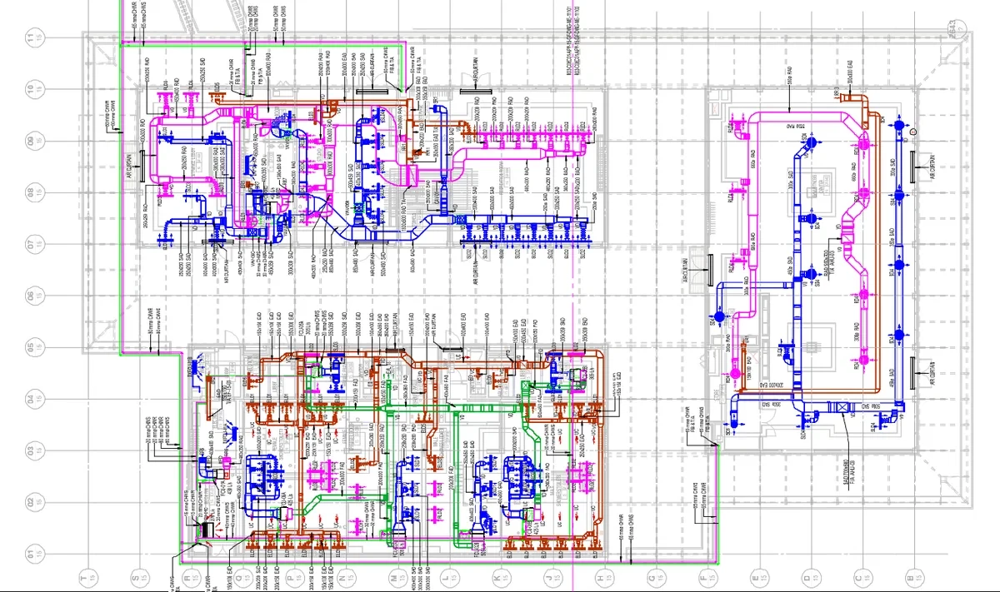
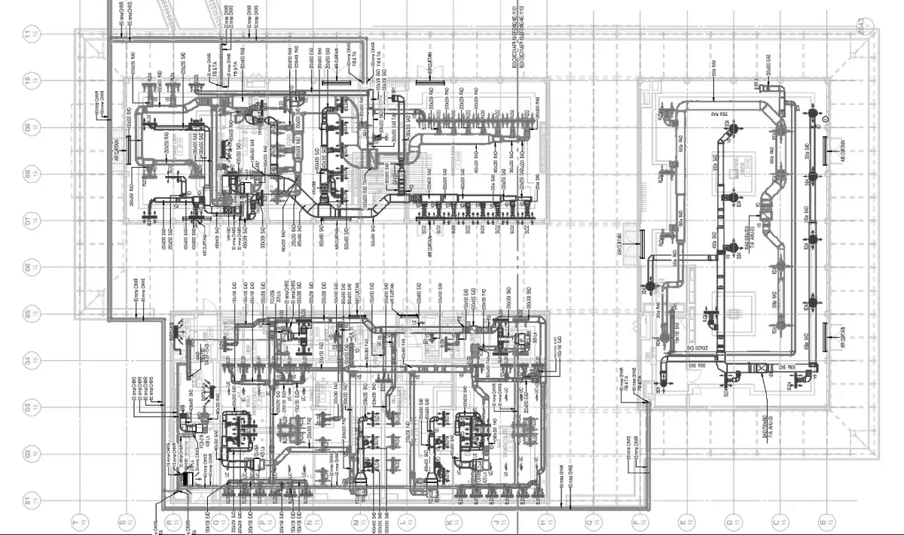

Turn Electromechanical drawings into reviewable quantities without counting every manually
Quantiify helps mechanical estimators identify equipment and fixtures, measure relevant scope, organize quantities, and review every result before it moves into the estimate.

P-01 Quantities
Prepare the quantities your trade needs


CAD drawingAI takeoffEquipment and fixtures
Identify and organize mechanical components across plans and schedules.
Duct and pipe measurements
Capture relevant linear measurements and group quantities for review.
Areas and zones
Organize takeoff information by floor, zone, system, or project structure.
Trade calculations
Apply workflow-specific calculations after the underlying quantity has been checked.
P-02 Estimator control remains central
A workflow your estimator can verify
Upload the project drawing set. Quantiify assists with detection and measurement. Your estimator reviews the result in drawing context, corrects what needs attention, applies relevant calculations, and approves the quantities that move forward.
- HVAC and building services packages.
- Commercial and institutional projects.
- Multi-floor mechanical systems.
- Drawing sets that require coordinated plan and schedule review.

P-03 A workflow your estimator can verify
Easy start, flexible work
Upload the project drawing set. Quantiify assists with detection and measurement. Your estimator reviews the result in drawing context, corrects what needs attention, applies relevant calculations, and approves the quantities that move forward.
- Commercial HVAC and plant installations.
- Residential and mixed-use developments.
- Hospitals, laboratories, and educational facilities.
- Multi-sheet mechanical drawing sets and revisions.

P-04 Features
Built for modern electromechanical estimation
AI Drawing Intelligence
Analyze drawings and identify key elements automatically.
AI-Assisted Takeoff
Speed up counting, measuring, and quantity takeoff.
Cross-Floor Takeoff
Reuse configured takeoff data across drawing floors.
AI Quick Optimize
Connect quantities with relevant pricing sources and rates.
Structured Estimation
Turn takeoff quantities into organized cost estimates.
Spend less time on the takeoff.
Spend more time estimating.
Bring a drawing set and see Quantiify count it, or tell us about your estimating workflow.